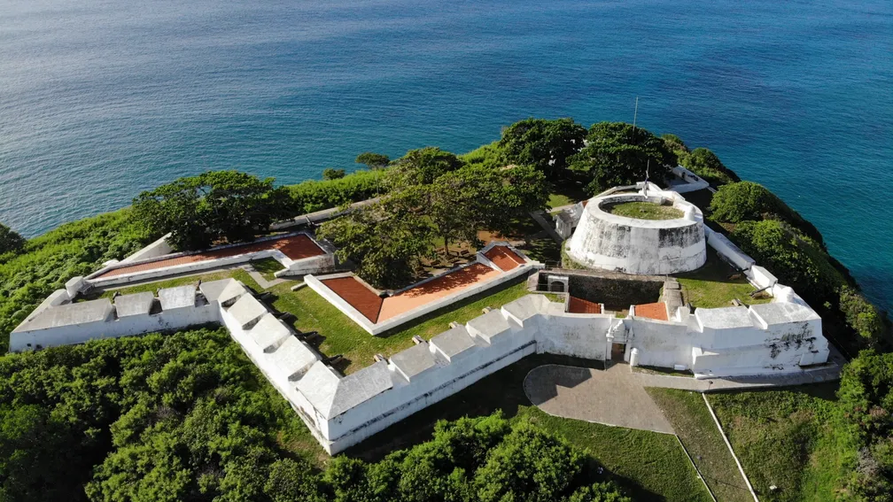
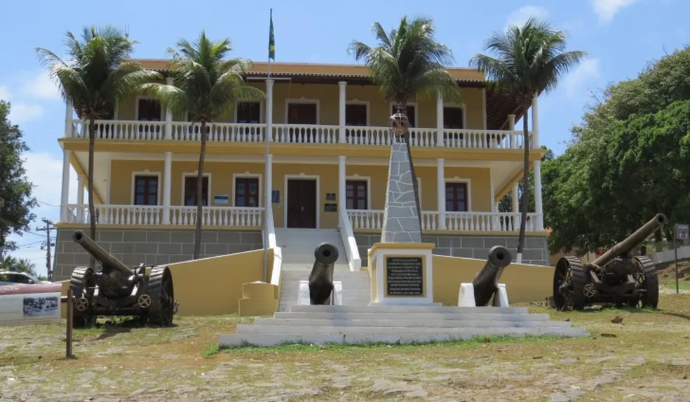
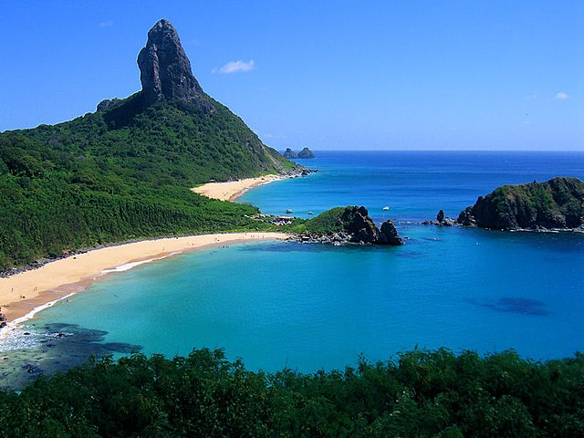
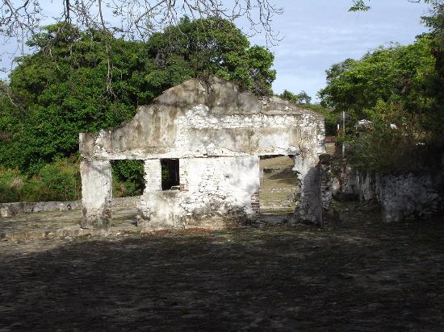
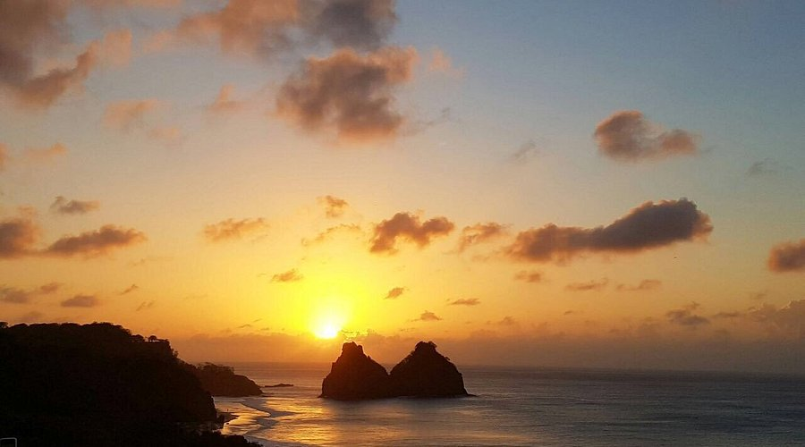

Principais Pontos Turísticos de Fernando de Noronha
Forte de Nossa Senhora dos Remédios
Um dos principais pontos históricos de Fernando de Noronha, o Forte de Nossa Senhora dos Remédios oferece vistas incríveis do oceano.
Igreja de Nossa Senhora dos Remédios

A principal igreja da ilha, com arquitetura colonial e muita história.
Morro Dois Irmãos

Um dos cartões-postais mais icônicos de Fernando de Noronha, conhecido por suas formações rochosas impressionantes.
Palácio de São Miguel
Um edifício histórico que atualmente serve como sede da administração da ilha.
Reduto de Santa Cruz do Morro do Pico
Localizado em uma área elevada, este reduto oferece vistas deslumbrantes de toda a ilha.
Reduto de Santana
Uma pequena fortificação que fazia parte do sistema defensivo de Fernando de Noronha.
Reduto de São Pedro da Praia do Boldró
Um reduto que defendia a Praia do Boldró, com vistas espetaculares do mar.